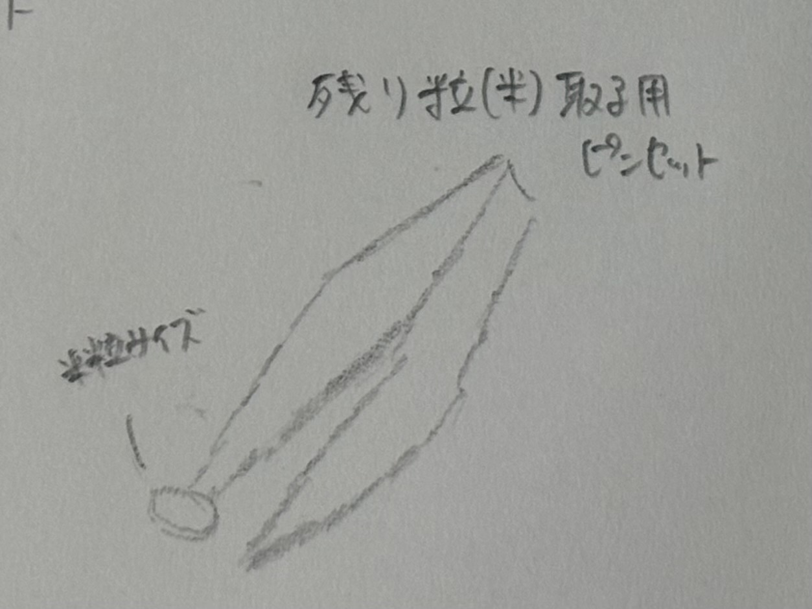
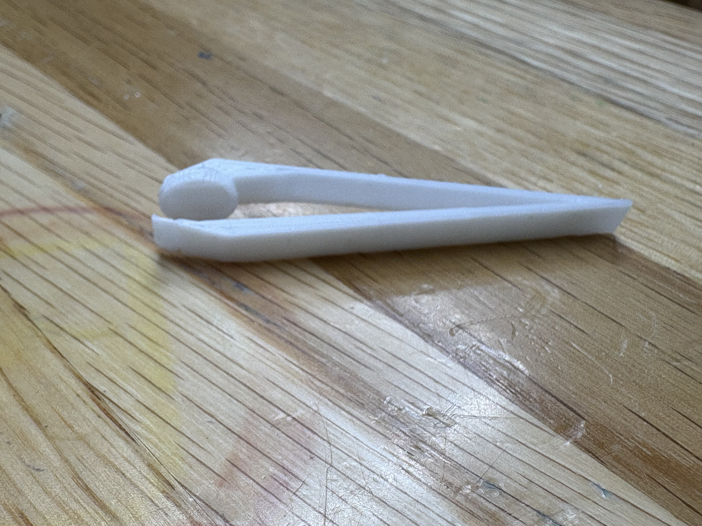
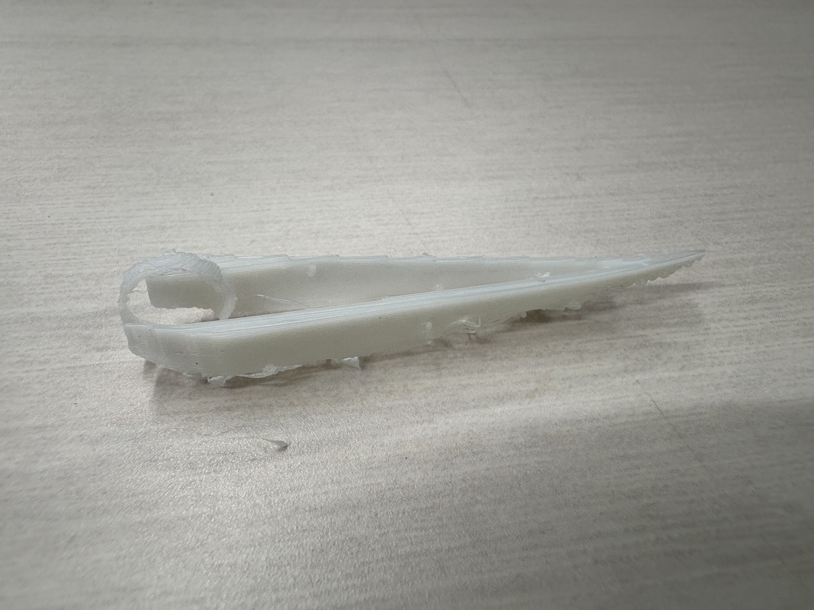
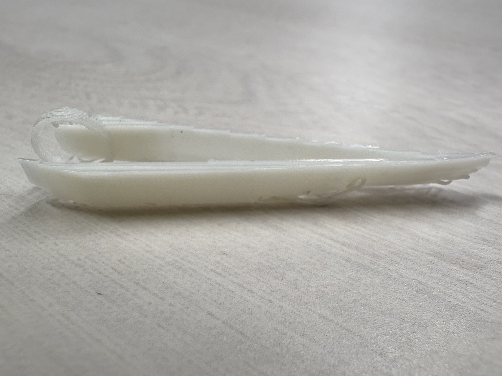

・構想段階のスケッチ

・完成したピンセット

・設計ファイル
1.2回目
3回目
・作品の説明
このピンセットは、ご飯の残り粒を取るためのものです。
使用方法は、まず、本来の形である片側で、米粒を剥がしたり掬ったりします。
その次に、もう片方のお皿になっている部分に掬った米粒を入れて運んでください。
・作った理由
まず、着想を得たのは、コンビニで買ったおにぎりを食べ終わった後、残った米粒を取るのに困ったからです。
今回は特にお茶碗に残った米粒を取るためのピンセットを作りましたが、普段何気なく処理していることに、
専用の道具があったら面白いなと思い制作しました。
また、私はよくコンビニのおにぎりを食べるので、あったらいいなという思いからも制作することにしました。
・工夫した点
・お皿の部分の大きさ
まず一般的な米粒一つ分の大きさを調べたら、
長さ→約5.2mm、幅→約3.2mm、厚さ→約2.0mmでした。
一粒が入り、かつ、すぐに取り出せるようにしたかったので、
直径が少し余裕を持たせて約7.0mmにしました。そして深さは、約1.5mmにして、米粒が簡単に取り出せるようにしました。
・ピンセットの長さ
長さは、お皿の方を短くして、あえて揃えませんでした。
理由は、お茶碗の形を考えたときに、底に向かって狭くなっているので、
使用する際に下に来る方をお皿側を短くして、反対側を長くすることで、米粒を取りやすくしました。
・制作プロセスの中で調べたこと
制作過程において、特に調べたことはありませんでした。しかし、1.2回目は失敗してしまい3回目で成功したのでそのプロセスを書きます。
まず1回目に作ったものが以下のものです。

上手く印刷されていなかったので、スタッフの方に違う台に変えた方が良いとアドバイスをいただいたので、データは変えずに、2つ目を作りました。
2回目に作ったものが以下のものです。

印刷はうまくいったものの、お皿の部分の底面が印刷されず、穴が空いてしまっていたので、問題はデータにあることがわかりました。
そして、冒頭にも添付しましたが、3回目に作ったものが以下のものです。
3回目を作る際には、まずお皿の部分を一から作り直し、サポートも試しに付けてみました。その結果、思ったとおりに印刷することができました